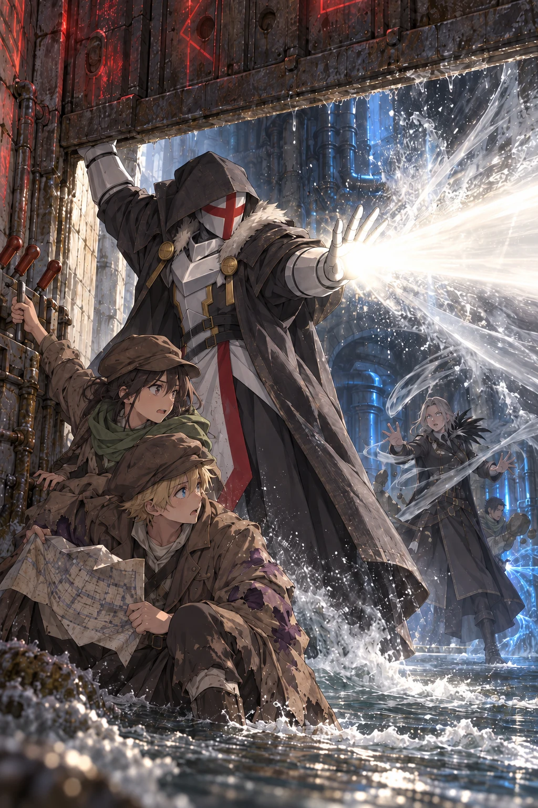

Volume One · Chapter Six
The Severance
The warning bells followed them underground.
Three low strokes.
A pause.
One high.
The sound passed through the runoff conduit in long vibrations, too deep to belong to any single tower. Water trembled in the cracks between bricks. Dust sifted from the curved ceiling and settled over Ultimos’s damaged work cloak.
Orin crouched as he walked. The conduit had been designed for storm water, not fugitives, and every few steps the roof dipped low enough to scrape his cap. Ahead of him, Ultimos bent nearly double, turning one armored shoulder wherever the brickwork narrowed. Even so, he made no sound. Orin’s borrowed boot splashed through an inch of freezing water. Behind him, Kisaya’s injured arm struck the wall. She hissed.
The channel carried rainwater and reservoir overflow rather than household waste. Its brickwork still smelled of silt, mineral damp, and the canal above.
The lightning mage had burned three black rents through both layers of Ultimos' disguise in the Hall of Liberation. Thin edges of white armor showed beneath gray and charcoal cloth. As Orin watched, pale lines passed across the damaged layers. The torn edges lifted, drew together, and sealed. Soot darkened the outer weave until the work cloak became whole again.
Before the last line faded, Ultimos raised two fingers without turning. A filament of the same light passed back through the conduit and sank through Kisaya’s sleeve. The damaged tissue showed once in pale outline, then returned to its proper shape.
Kisaya flexed her hand and bent her elbow. “You could have done that before.”
“It did not impede travel before.”
Ultimos never slowed.
The bells began another sequence.
Kisaya’s last answer followed Orin underground.
They know what you did.
Orin still felt no safer. The city hunted them for what Ultimos had done, and he had no idea what the white mage might do next.
In the Hall, Orin’s shout had stopped him. Orin did not know whether it would work twice.
“Then tell us,” Orin said. “What did we release beneath the ruins?”
His voice struck the narrow brick and came back sounding more certain than he felt.
Ultimos reached the next junction. “Which route?”
Orin pulled the request slip from his sleeve. The charcoal marks had blurred where canal water reached the paper, but he could still distinguish the line he had copied from the old survey.
“Left. We should pass beneath the reservoir, then turn east at the broken overflow.”
Ultimos took the left passage.
Kisaya ducked beneath a low pipe. “In the ruins, you called yourself Grand. The bearded Warden had read enough to be frightened. Half the hall thought you were wearing a costume until your light broke their wards and chained their captain to the floor. Start with Grand.”
Ultimos reached the broken overflow.
Water spilled through a split iron pipe and vanished into a grate below. Beyond it, three passages descended at different angles. Ultimos studied the old brickwork, then the newer metal channels hammered into its seams.
“The city has classified the danger I present, not identified what I am,” Ultimos said. “The same response could be used against any caster its district forces failed to contain.”
Kisaya frowned. “That does not answer Grand.”
“No. Grand was ours. It marked mages trusted to teach masters and direct them in crisis.”
“And Lord?” Orin asked.
“Lord was not an honorific. It marked dominion. Veyr and the lands beyond its walls answered to me, and my estate housed the court from which I governed them.”
He selected the eastern passage.
That told Orin how much of the old world had once answered to Ultimos. It did not tell him what they had released. Veyr did not understand what it was hunting, and neither did he.
Ultimos stepped over the broken pipe.
“We’re still checking the outlet first?” Orin asked.
“Yes.”
“And then?”
“If it can be secured, I take you beyond the walls. Then I return through the outlet, follow this network south, and enter beneath the Spire without crossing the central streets.”
“So the outlet isn’t your way into the Spire,” Kisaya said.
“No. It is how I intend to leave with whatever I find.”
“You require enough truth to understand what follows,” he said. “Very well.”
Kisaya exchanged a glance with Orin.
They went east.
The sound of the city thinned behind them. Brick sweated around the first two turns. Roots had entered through the mortar and swollen into pale knots overhead. Then, exactly where the copied survey predicted, the passage changed.
White stone replaced the brick in a line so clean it might have been laid that morning.
The walls widened. The ceiling rose above Ultimos’s head. Shallow channels ran along both sides of the floor, dry despite the water behind them, and a many-rayed sun repeated at intervals beneath four centuries of hammer scars.
The runoff thinned to nothing at the seam. They had left the modern drainage conduits and entered the older civic network preserved beneath them.
Ultimos placed one hand against the nearest wall.
“This carried the northern waterworks beneath the eastern court,” he said.
“Toward what is now beneath the Spire?” Orin asked.
“Toward the central halls that stood there before it. There was no Spire.”
His hand left the stone.
They followed the passage around a long curve.
The passage ended at a sealed wall.
Dark stone filled the corridor, threaded with red veins and crossed by iron braces that entered the reservoir foundation. Pressurized water hummed inside its joins. Wind wheels carried blue sparks from one brace to the next while black fire watched the floor.
Four elemental systems had agreed to become one wall.
Ultimos approached until the fire reflected along the lower edge of his helmet.
He touched one iron brace with his smallest finger.
A point of white entered the metal.
The nearest wind wheel brightened.
Ultimos withdrew before the light completed a turn. The blue spark faded, but not entirely. It continued circling the wheel as though searching for whatever had disturbed it.
Kisaya stood well back. “Can you break it?”
“Easily.”
“Then why are we looking at it?”
Ultimos indicated the braces and turning wheels. “It is tied to the reservoir wall and the city wards. Disturb any one part and the others report it.”
Orin pictured stone shifting beneath houses. A reservoir emptying into buried streets. Every message lantern in Veyr showing their location at once.
“So breaking it would be loud,” he said.
“Power is not the difficulty. Silence is.”
Ultimos looked toward a narrow maintenance opening half hidden behind the final white pillar.
The old door had been removed. Newer tracks ran through the dust beyond it.
“We go around.”
Orin checked the copied line. The maintenance branch curved around the reservoir, descended, and doubled back toward the northern outlet.
They entered single file.
The branch was scarcely wider than Orin’s shoulders. Iron pipes crowded one wall, and corroded handles projected at inconvenient heights. Ultimos led with his hood lowered over the repaired work cloak. Orin followed. Kisaya came last, one hand pressed over the disk beneath her jacket whenever she had to turn sideways.
They had gone perhaps forty paces when metal struck stone ahead.
Ultimos stopped.
Voices descended through an inspection shaft.
“—lower branch clear.”
“Keep your ward active. Orders say no gaps.”
“I heard the order.”
Blue light spilled around the next corner.
Ultimos looked once at Orin.
Orin unfolded the request slip. The old survey showed a service channel branching before the sealed wall, but the stone ahead appeared unbroken.
He searched the stone.
A vertical seam behind three pipes outlined a narrow service door.
“There,” he whispered.
Ultimos moved toward it.
Before he reached it, three people rounded the corner.
The leading Warden wore an earth-marked chain and a thin brown ward. A water mage followed, then a broad-shouldered wind witch with three black feathers at her collar, carrying a black-glass focus that pulsed in time with the pipes.
All three saw Ultimos.
None laughed.
“We've encountered intruders” the witch said. Her voice remained level. “Northern lower maintenance. Three subjects.”
The black glass darkened in her hand. Red script appeared beneath the containment mark. Her gaze moved from Orin to Kisaya, then returned to the message.
“The descriptions match the southern recovery witnesses.”
The water mage looked at them. “They’re children.”
“That order predates the white mage,” the earth Warden said. “Why does it carry lethal authority?”
“No custody. No statements.” The witch crossed toward a brass-lined signal socket set into the wall. “The order remains in force.”
“Do not connect that focus,” Ultimos said.
The earth mage planted one boot. Stone gathered over both forearms.
“White mage. Hands visible. You will submit to full binding.”
“No.”
He gave the order no more consideration than that.
The witch drove the black glass toward the socket.
Kisaya seized the nearest wall lever, kicked the stone for leverage, and dragged it down.
An iron cover dropped over the socket.
The point of the black glass entered a fraction before the cover struck. Iron sheared it from the witch’s hand. The broken tip remained lodged in the socket, glowing red.
A pulse escaped into the pipes.
The witch snatched back what remained of her focus. “Signal sent.”
Metal answered in both directions. A gate struck the floor behind the patrol. Water drew backward through the pipes beside Orin, filling them with a low, rising hum.
The earth mage punched both hands toward the floor.
Stone rose across the concealed service door.
“That is the route!” Orin shouted.
White light separated every line the earth spell had joined. Blocks fell inward without striking one another.
The water mage caught the nearest pipe in both hands. Blue light ran from his wrists into its joins. Instead of drawing the water out as a weapon, he fed his magic into the system until the hum became a shudder beneath Orin’s feet.
Ultimos stepped through the opened doorway. “Move.”
Reservoir water punched from a round vent and threw Orin against the wall. Kisaya caught his coat before the current could carry him back into the corridor. A second vent opened above them. Then a third.
A second iron gate descended across the service door.
Ultimos caught it. The impact drove his boots into the floor. Red light crawled over his gauntlets, searching for a spell. He used none.
“Under.”
Kisaya slid beneath. Orin followed through the water. Three rusted levers waited on the other side, beside an overflow gate half buried in mineral crust.
Behind Ultimos, the witch threw aside her broken focus. Wind compressed between her hands until it became a transparent blade. She drew it back, and its edge carved a white groove through the flooded stone.
She did not aim at the white mage she had been ordered to contain. Its point passed him and settled directly on the children named for death.
“Stop!” Ultimos cried.
She released it.
The blade shot beneath the gate. Water split before it. Orin had time to see its path cross his chest and no time to leave it.
Ultimos kept one hand beneath the iron. He raised the other and pointed.
A beam of white light crossed the flooded corridor.
It struck the wind blade head-on. The spell burst apart from tip to hilt, compressed air breaking across the walls in sheets of spray.

The witch recoiled. Shock emptied the fury from her face, but wind was already gathering between her hands again.
“I warned you.”
Ultimos moved his finger from the ruined spell to its caster.
The second beam struck her before the new blade could form. For an instant, white light revealed every line holding her together.
Then the lines broke.
The witch vanished.
The remains of her focus struck the flooded floor and split into two black pieces.
“Which lever?” Kisaya shouted.
Orin dragged out the survey. Water had blurred the charcoal beside the branch, but the lowest line still descended before curving north.
“Lowest.”
Kisaya seized it. The lever moved halfway and caught. Orin added his weight. Together they tore the rusted pin free.
The overflow gate opened.
Water changed direction so violently that Orin lost his grip. It roared past the gate and into the side channel, dragging the water mage from the pipe. The earth mage drove one arm into the wall. Stone closed around his elbow, holding him long enough to catch his companion by the back of the coat.
The pressure fell. Ultimos ducked beneath the gate and released it.
The gate struck the floor. Its red ward lines remained unbroken. Stone ground against the other side once, then stopped.
Orin lay in the shallow rushing water with the survey plastered beneath one hand.
The bearded Warden had said only three names were attached to the recovery, and all three were dead. Yet their secret order had outlived them and reached another patrol without carrying a word about the disk.
Someone above them had always been waiting for it.
In the Hall, the captain had been chained and helpless. Here, the witch’s killing spell had already crossed toward Orin and Kisaya.
Orin could not call those deaths the same. He still could not call erasure the only answer.
The gate had stopped the two surviving patrol members, not defeated them. Both had seen the hidden service door, and the alarm had already carried word of the breach deeper beneath the reservoir.
The service passage descended sharply. Orin kept expecting stone to split behind them, but only the retreating water followed them to the bottom.
At the bottom, the passage opened into a circular chamber where six waterways met. Five lay dry; the water following them spread thinly across the sixth and drained through cracks between the stones. Broken benches curved along one wall. Generations of workers had driven nails into a ruined central pillar, but an open hand remained beneath the rusted wire, and hundreds of three-curve healing patterns covered the stone behind the benches.
Here, unlike Nema’s damaged inheritance, the curves were complete.
“A waystation?” Orin asked.
“A practice court.”
Ultimos crossed to one novice’s attempt. Its last curve ended too sharply and had split the stone around it.
Orin remained near the entrance. The failed wind spell still chilled his face. “Was the light you used on Kisaya the same magic you used on the witch?”
“The same discipline.”
“Could you have stopped her without killing her?” Orin asked.
“Perhaps.”
The answer chilled him more than a denial would have.
“Then why didn’t you?”
“Because I had less than a breath to decide whether I would gamble with your lives to preserve hers.”
Kisaya turned her restored arm beneath the dim light.
“Different uses of the same understanding. Anything that remains whole possesses relationships that hold it together. Your living form retained those of an uninjured arm. I followed them.”
Ultimos touched the split beside the novice mark. The stone closed beneath his thumb without changing the student’s imperfect curve.
“And the witch?” Orin asked.
“I broke the relationships that allowed her form to remain coherent. Destruction requires less understanding than correct repair.”
“So every white mage could erase people.”
“Every practitioner learned that destruction was possible. Few could unmake a living body cleanly, and fewer still at a distance. Black magic can kill just as readily. Capacity is not mastery.”
Orin looked at the complete healing emblem. “Nema draws on it without knowing its name.”
“Her pattern reaches the Meridian. The knowledge of what it touches was lost before it reached her.”
“I thought the Meridian was a place.”
“You found me in a Meridian temple. Such temples were built where its currents could be focused. The Meridian itself is the force through which form can be worked.”
Ultimos left the mended lesson and took the eastern channel. Orin and Kisaya followed.
Kisaya looked back at the practice court. “So the histories got one thing right. White mages governed Veyr.”
“We held authority. That does not make the rest true.”
Kisaya nodded toward the old channels. “Suppose the Order decided a street had to be emptied before it rebuilt the foundations. Did the people living there get to refuse?”
“Their willingness did not strengthen the foundation beneath them.”
“Then no.”
Orin had heard Warden captains use gentler language before clearing market alleys. Safety. Necessity. Temporary authority.
Ultimos did not bother making the power sound kind.
Water ticked inside the wall while nobody spoke.
Kisaya watched Ultimos move through the dark. “At the mural, you said Fermina held the gate while her sister and you—”
Ultimos stopped. One armored hand settled against the white stone beside him.
When he spoke, the name took him longer than any title had.
“Fiona.”
The word was barely louder than the water.
His fingertips rested against the wall.
“Fiona was Fermina’s sister.”

Ultimos withdrew his hand and resumed walking.
For a long time, only Orin’s and Kisaya’s footsteps followed him.
The eastern channel narrowed. Old white stone gave way to brick patched with mismatched slabs, and the ceiling sank until Ultimos had to incline his head.
Orin watched Ultimos’s back and understood something he had missed in the ruins. For Ultimos, the White Order had not fallen in ancient history. Its dead had been alive this week. Yesterday, perhaps, by the measure of darkness inside the seal.
Kisaya broke the silence. “Did Fiona survive?”
Ultimos answered without turning. “I do not know.”
“When did you last see her?” Orin asked.
“Do not ask me about her again.”
The warning was not loud. It did not need to be.
His right hand had closed at his side. Pale light showed once between the fingers, then vanished.
Neither child answered.
Ultimos kept walking.
“You asked what you released,” he said. “To understand that, you require the Severance. You do not require Fiona.”
The channel divided around a collapsed cistern. Ultimos chose the lower branch, where water covered the floor to Orin’s ankles.
“The Liberation was a war by the time anyone honest could name it. It did not begin as one. In the final days, false reports drew senior mages away from their schools. Messages bearing trusted seals sent others into the temples. The orders contradicted one another because they were meant to scatter us.”
“Black units were already inside protected districts when the alarms began,” he continued. “Someone had supplied them our routes, our postings, and the masters responsible for each region. Nothing that coordinated was improvised.”
At the next junction, a red pulse entered the pipe above them and divided around the curve. Ultimos raised one finger. Pale light exposed the ward lines carrying it north.
“Can it find us?” Orin asked.
“It reports the breached containment, not our position. The surviving patrol members will provide what it cannot.”
“They saw the service door.”
“Yes.”
Ultimos waited until the pulse had passed, then chose the older channel beneath it.
Orin watched the last red thread fade from the pipe.
“Then the first Meridian temple was severed,” Ultimos said.
Kisaya looked back. “First?”
“It was not a single attack. They moved from one temple to another. Survivors reached courts that had not yet been struck. Warnings followed them, when the messengers survived.”
His fingers flexed inside one gauntlet.
“At each captured temple, they drove the same curse through the Meridian. Ordinary practitioners nearby lost their connection completely. Their patterns would not close. The strongest retained enough access to suffer for it; precision became painful and slow. Reaching the Meridian felt like forcing a hand through a closing blade.”
The water around his boots rippled outward.
“Fermina and I were already fleeing. We watched practitioners lose spells they had shaped all their lives. We escaped districts whose white defenses failed behind us and reached others already preparing for the same attack.”
“Then the curse ended,” Orin said. “Nema can still reach the Meridian.”
“At the earliest temples, the connection returned before the later ones were struck. That was how we knew the wound was temporary.” Ultimos’s hand closed. “It did not need to last. By the time the Meridian returned, healers were dead, teachers had disappeared, and archives were burning.”
Beneath a corroded pipe, Ultimos turned toward them. The city murmured far above, enormous and indifferent.
“Later, while Fermina and I were guiding survivors away from the fallen districts, a warning from someone I trusted drew me to the Meridian temple south of Veyr. I was told lives depended upon my immediate presence. Fermina continued with the survivors while I went ahead to secure it. I was certain delay would kill them.”
The plates of his gauntlet gave a faint metallic click.
“When I arrived, archmages stood where attendants should have been. The chamber had already been prepared to hold me.”
“Who sent the warning?” Kisaya asked.
“You do not require that answer.”
He looked ahead again. “They completed the seal before I could leave. Everything I have told you happened before it closed. I do not know which temple they struck next. I do not know how long the campaign continued, what became of Fermina, or how many survived.”
His voice lowered.
“After the temple closed, there was only the seal.”
“That is enough.”
Orin thought of darkness without sleep. Four centuries without time. Waking to two frightened children and a Warden who had carried a stolen artifact into the chamber that held him.
Whatever the captain in the Hall had known, the archmages waiting inside Ultimos’s temple had understood exactly what they were doing. Enough had known.
They emerged into another maintenance chamber. A rusted pump occupied its center, surrounded by narrow ladders that climbed into darkness. On the far wall, newer black stone had been driven through the original foundations. Thin red light pulsed within it.
Ultimos examined the pulse, then led them through the lowest opening without touching it.
The northern outlet lay two levels below the old reservoir.
Orin checked the water-blurred survey. One of the four double-ringed symbols sat at this junction—the first they had reached since the Meridian temple.
They reached it by crawling through a spillway so narrow that Kisaya had to move sideways. Orin emerged with brick grit in his hair and pain in both knees. Ultimos stepped out behind them with his repaired work cloak unmarked by the crawl.
Beyond the spillway stood a circular control chamber. An old waterworks gate occupied most of its northern wall. On the survey, the passage beyond it crossed beneath the outer wall and continued past the city’s containment perimeter.
White blocks formed its original arch. Everything inside it was modern: layered iron, slabs of black stone, and four heavy braces pinning interlocking elemental channels into the foundations. Reservoir water moved under pressure behind the walls on either side of the gate. Cold air breathed through a hairline seam at its center. The passage beyond remained dry.
Above them, through the stone, came the faint uneven thunder of wheels on a street.
People lived above the gate.
“You could make another tunnel,” Orin said.
At the first brace, red light passed over Ultimos’s gauntlet without finding purchase. “Yes. Every ward in Veyr would know where I broke the wall. The reservoir is joined to these foundations. A breach could announce the route, release the water, and collapse the streets above it.”
“So this isn’t about whether you can get through.”
“No. I need a gate I can open, close, and use again. Breaking the wall would give us one passage and tell the Conclave where to wait.”
“What are you planning to bring back?”
“Whatever survives beneath the Spire.” He followed a red line from the brace into the floor. “The archive may name who built it, which Meridian sites remain, and whether others were sealed as I was.”
Kisaya studied him. “You really think someone else could still be sealed?”
“I do not know.”
“But you hope so,” Orin said.
Light passed once across Ultimos’s gauntlet.
“I hope I was not the only one who survived.”
“And if those records say the Order was what we were taught?” Orin asked.
“Then I will carry that truth out with the rest. I will not burn a record because it condemns us, or trust one merely because it absolves us.”
He moved to the second brace. “First I recover anyone still imprisoned and whatever knowledge remains. Then I rebuild the schools from what survives.”
Kisaya looked past him at the outer gate. “And the Conclave?”
His hand paused over a pulsing line. “It will not remain as it is.”
Kisaya waited.
“I will open the seals and take the hidden records from its control. Anyone who knowingly maintained prisons or destroyed evidence will answer for it.”
For an instant, satisfaction warmed Kisaya’s expression.
Orin knew that look. He had imagined the black mages frightened and their ledgers burning, too. There was a clean pleasure in watching power meet something stronger.
Then Kisaya asked, “Judged by whom?”
“By me, if no court remains outside the Conclave’s control.”
“So you still decide who knew enough.”
“The records will show who received the orders and who carried them out.”
“They will not tell you what was in someone’s head.”
At the third brace, Ultimos said, “No. They will tell me where to begin.”
Kisaya folded her arms. “And if you are wrong, we are back to your empty street. The mage decides what is necessary. Everyone else pays.”
Ultimos faced her. Red and blue light alternated over the featureless helmet.
“I have not forgotten what you said.”
“This is still revenge,” Orin said.
“Yes.”
The word was immediate.
Ultimos looked upward. Wheels passed over the buried chamber, their weight traveling through stone to the gate.
“But it waits. The Spire may contain the last intact memory of my people. A careless assault could destroy the archive, kill prisoners I have not found, or give the Conclave time to empty every remaining seal. I will not risk that for the satisfaction of striking first.”
The pain in Fiona’s name remained beneath the answer. Ultimos had postponed his judgment, not abandoned it.
“And what happens to us when you begin this revenge?” Kisaya asked.
“If this route can be secured, I will place you beyond the walls before I return beneath the Spire. Your compelled service ends there. If you return afterward, the decision and its consequences will be yours.”
Kisaya went still at compelled. It was the most honest word Ultimos had used for their arrangement.
“You think the Conclave will let us walk away?”
“No. That is why this gate matters.”
He left the third brace and continued his inspection.
Kisaya waited until his attention returned to the wards. “If he opens it,” she said quietly, “do you want to leave?”
Orin thought of the wanted notice, the wind spell crossing the maintenance passage, and Nema’s door three lanes from their last refuge.
Veyr had never given either of them a legal home. It still held Nema. It held Ressa, who found work for Kisaya and trusted Orin with permit papers, and the secondhand seller who put aside rain-damaged primers because he knew Orin would read them. Kisaya’s roofing gloves and Orin’s battered book remained behind the loose board in the glassworks. So did the life those things had been meant to buy: a permanent crew place, a junior records examination, one rented room before another winter. Beyond the walls they might be alive, but every person who knew their names and every proof that they had been building a life remained inside.
“I want leaving to be a choice instead of a way to die.”
Kisaya watched Ultimos move along the gate. “So do I.”
“Until then?”
“We stay close.”
At the largest brace, Ultimos lowered his hand.
“Can you open this one quietly?” Kisaya asked.
“No.”
He touched none of the wards. He followed their channels toward the right-hand wall, where a circular plate had almost disappeared beneath mineral stains. At its center, an open hand cupped a many-rayed sun. Two rings surrounded them, and seven narrow interruptions divided the outer one at exact intervals.
The seven interruptions matched the symbol Orin had copied over this chamber.
Kisaya inhaled.
Her hand snapped to her jacket. The cloth trembled once beneath her palm. A needle-thin ray of pale light escaped between her fingers and vanished.
The disk.
Across the chamber, the plate’s outer ring shifted by the width of a fingernail. The gate’s hum swallowed the tiny scrape.
Ultimos had his back to them, one hand raised within a finger’s width of the largest brace beside the plate. Blue and brown light alternated across his helmet while he traced the ward lines inside it.
Orin stared at Kisaya.
She shook her head once.
She had not taken it out. The disk had answered through cloth and open air.
“Ultimos—”
The blue light in the brace stopped alternating.
The plate’s outer ring settled back into place.
Ultimos turned toward the western passage.
Boots sounded beyond it in a measured advance, each step separated by the same interval. With every fourth pace, something in the wall gave a low metallic note.
Red light traveled through the wall. The wind line above the gate brightened in answer.
“They are tied to the city alarms,” Ultimos said.
Kisaya pulled her jacket tight and kept her palm pressed over the disk.
Orin heard at least six people. Perhaps more. No one spoke. They did not need to; the walls announced their approach for them.
“Can you beat them?” he whispered.
“Yes.”
Ultimos watched the blue pulse travel toward them.
“Doing so would identify this outlet and everything beneath it.”
He crossed to the spillway. “South.”
The first edge of black fire appeared around the western bend.
Orin scrambled into the narrow opening. Kisaya followed so closely that her boot struck his ankle. Ultimos entered last and drew two fingers across the spillway’s rim.
Dust lifted behind them. Their fresh handprints faded from the grit. Old webbing returned to the corners, and a brittle skin of mineral scale closed across the lower lip, restoring the opening to the arrangement Ultimos had found when they entered.
They reached the first bend as the patrol entered the outlet chamber.
“The alarm came through here,” a woman said.
“The gate is still sealed. Check every ward.”
Metal touched metal. The note traveled through the brick beneath Orin’s palms.
Kisaya went rigid behind him.
Pale light had found the spaces between her fingers.
Across the chamber, the plate’s outer ring scraped against the stone.
The inspection stopped.
“Outer ring moved.”
Orin looked from Kisaya’s hand to the dark passage ahead.
“Farther,” he breathed.
Kisaya crawled deeper. Ultimos remained at the bend behind them, between the children and the patrol they could not fight without betraying the gate.
The disk trembled against Kisaya’s ribs. A second white ray escaped her jacket.
The outer ring turned with a heavier click.
“It moved again.”
Black fire brightened at the mouth of the spillway. A narrow current of air pressed into the restored webbing and pushed a line through the dust outside.
Orin stopped breathing.
The current pressed against the restored mineral skin. Webbing bowed around it, but the brittle surface did not break. The air withdrew without entering the spillway.
Kisaya dragged herself deeper. When she crossed from white foundation stone into old brick, the light beneath her hand went out.
Silence held in the outlet chamber.
“The ring stopped,” the first voice said.
“It followed the ward test. Nothing is broken, and the gate never opened.”
“The spillway seal is intact.”
“Record movement in the old mechanism. Two remain here. Send for someone who knows the old foundations. The rest continue west.”
Four sets of boots resumed their measured cadence and passed west, every fourth step answered by the wall. The black fire at the spillway dimmed but did not disappear. Two black mages remained in the chamber, their movements marked by occasional notes of metal against stone.
The spillway bent twice before widening into a low brick passage. Ultimos led them south until the black fire no longer touched the walls and the metal notes had faded behind them.
Kisaya kept one hand clamped over the disk beneath her jacket.
“It answered the plate,” she said.
Ultimos stopped ahead of them. The white helmet turned first toward her hand, then toward the passage behind them.
“Without contact?”
“I never took it out.” Kisaya drew the disk from her jacket but kept it flat against her palm. “You told me not to put it against anything bearing the seal. I didn’t.”
“No.” The red cross settled on the milk-white stone he had already examined. “That makes the response more concerning, not less. Tell me the sequence.”
Orin described the needle of light and the first movement of the outer ring. Kisaya supplied the second response: stronger, longer, beginning when the black mages tested the gate.
“Did any notch change?” Ultimos asked.
Kisaya turned the disk within her palm. The shallow groove and seven interruptions remained exactly as they had been in the Survey Hall.
“No.”
Ultimos examined it without touching it or calling any light of his own.
“In the temple, the disk answered the circle while I executed the Warden. Here it answered a plate added after I was sealed. They respond to one another. That does not tell us which one controls the exchange.”
“The plate moved again when they tested the wards,” Orin said.
“Their test may have called to the disk, and the disk may have answered. Or the test moved the plate on its own. Did the gate open?”
“No.”
“Then recognition alone cannot open it.”
Kisaya looked back toward the outlet. “Could it still open the gate?”
“Perhaps. Something else may be required, and we cannot test it while every movement enters a black mage record.” Ultimos looked from the disk to Kisaya. “You reported the response at the first safe opportunity. You did not cause it. But the marked sites may sense the disk from a distance. From now on, tell me the instant it changes.”
Kisaya returned it to her jacket. “So the route is gone.”
“Compromised,” Ultimos said. “The gate cannot be opened silently, and the mages are watching it. We do not enter the Spire tonight.”
Orin looked south, toward the old channels that returned beneath the city. “After coming all this way, we go back?”
“An archive recovered without an unobserved route remains in the enemy’s possession. Prisoners found along a road the Conclave can close remain prisoners.” Ultimos turned south. “We find secure shelter and another means of opening the outlet. Then we return.”
Behind them, the disk and gate had stirred together, but the way beyond remained sealed. Whether that exchange promised passage or prison, even Ultimos could not say.
Ultimos glanced once at the angle of the branch. “This line supplied the eastern court.”
Orin compared it with the copied survey. The modern streets had buried that route beneath the Ashward.
South of the reservoir, the city’s buried defenses became thinner and its neglected damage worse.
The first impact reached them through the floor.
Water jumped inside the channels. Dust sifted from the arch, and somewhere far ahead, brick collapsed in a long descending roar.
Ultimos stopped with one hand against the wall.
“What was that?” Orin asked.
“Black fire discharged into load-bearing masonry.”
A second concussion rolled through the southern branch. This time Orin felt it in his teeth.
Kisaya looked into the dark ahead. “The Ashward.”
“It could be anywhere south of us,” Orin said.
“That is where they were searching.” Her hand closed. “Nema.”
Ultimos was already moving. “We reach her before they do.”
The remaining city wards sealed most of the old branches and funneled movement into three monitored passages. Ultimos rejected two after finding alarms on them. The third led south through neglected masonry—drains repaired with warped boards, conduits narrowed by refuse, and support arches that would not have survived a hard flood.
The impacts continued at measured intervals.
Each one was louder.
Near the glassworks, a street drain carried voices into the passage.
“Clear the building!” someone shouted above.
A woman answered too quickly for Orin to make out the words. Stone struck stone. Her reply became a scream beneath the crash.
Ashward.
The sun had moved west of the Black Spire by the time they climbed through the floor of an abandoned kiln. The round chamber smelled of old clay and wet soot. Half its roof had fallen inward, revealing a narrow strip of pale blue sky.
Orin pushed aside a cracked firing tray and looked through a gap in the outer wall.
They had emerged two lanes from the glassworks loft.
He almost laughed from relief.
Then he saw the black mages.
Two stood at the north end of the glassworks lane. Three more worked southward from door to door, driving residents into the street. A chain had been drawn across the nearest intersection. People were being allowed through one at a time after showing their hands and faces, but no one was permitted to return home.
Black marks covered the doors whose occupants had not answered quickly enough. At the far end of the lane, an earth mage drove both hands toward one of them. The marked wall burst inward. Its upper windows collapsed in a roar of brick and breaking timber while the family outside screamed for someone still inside.
Through the crowded roofs, the top of the loft window remained visible.
Its curtain hung motionless in the broken frame.
Nema’s treatment room lay another three lanes beyond it, out of sight.
The line of marked doors was moving toward her.
“Nema is past that checkpoint,” Orin said.
Ultimos studied the mages, the roofs, and the narrow ways between them. “We do not approach by the street. Show me another route.”
Across the Ashward, the elemental lamps changed.
Red fire withdrew from the glass globes. Blue water-light dimmed to a flat sheen. The ordinary civic colors of Veyr vanished street by street, replaced by a single black emblem suspended inside every lamp.
The Conclave seal.
People stopped beneath it.
Shopkeepers began closing shutters. A mother seized both of her children by the wrists and hurried them indoors. The mages at the checkpoint straightened as the same symbol appeared on the black-glass focus between them.
The change reached every district at once. The command behind it had been prepared while they were still underground.
From somewhere beyond the abandoned kiln, a man’s voice rolled over the rooftops.
“White mage.”
The words were not shouted. Magic placed them equally in every street, intimate as speech beside the ear.
Whether Solmir believed the title or merely found it useful, Orin could not tell. In the Archmage’s voice, it sounded less like recognition than bait.
Ultimos stopped.
Orin knew the voice only from proclamations and public trials. Everyone in Veyr knew it.
“This is Archmage Solmir,” the voice continued. “All districts are under final containment.”
Kisaya drew closer to the broken wall. Beneath her jacket, her hand remained wrapped around the disk.
The black seals burned without light.
“You entered Veyr beside two fugitives of the Ashward,” Solmir said. “You concealed yourself among its homes. Until you submit, every unsearched structure in this district will be opened by force.”
The black mark on another door at the southern end of the lane flared. The front of the building blew outward. People threw themselves behind the checkpoint while black mages raised shields against the debris.
Ultimos stood in the ruined kiln, his cloak concealing the white armor beneath it.
He went absolutely still. Orin wondered whether Solmir understood who was listening.
The voice came again.
“Come out, white mage.”